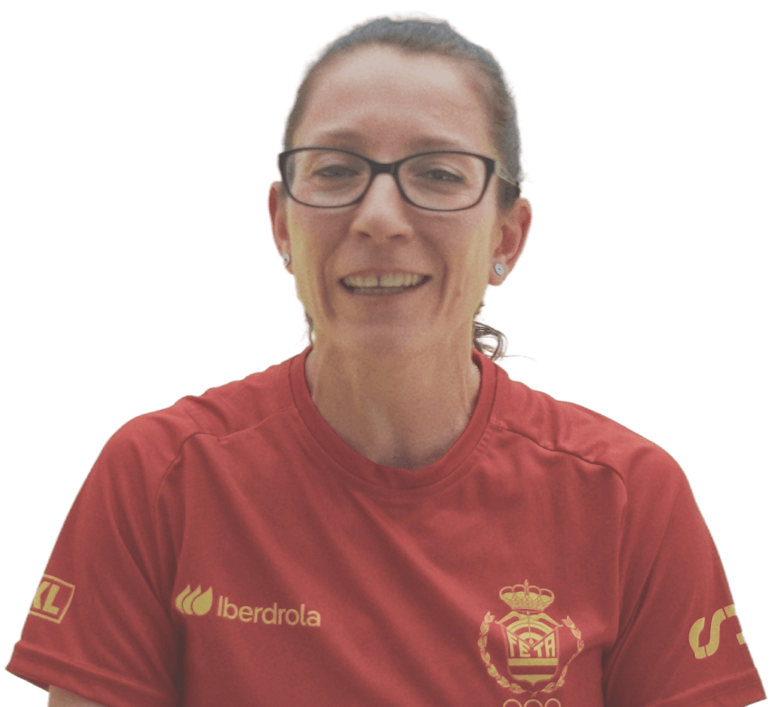
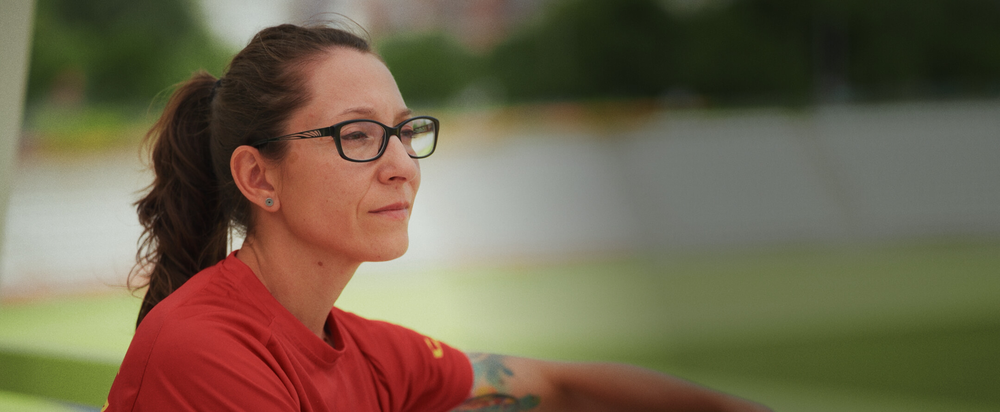
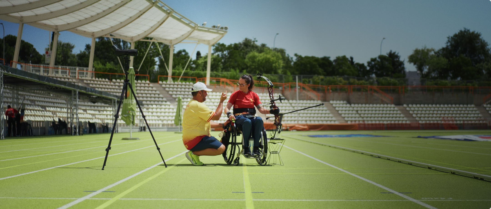
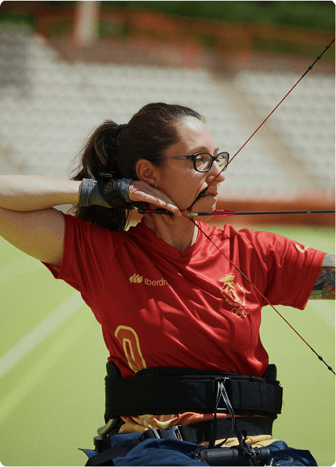
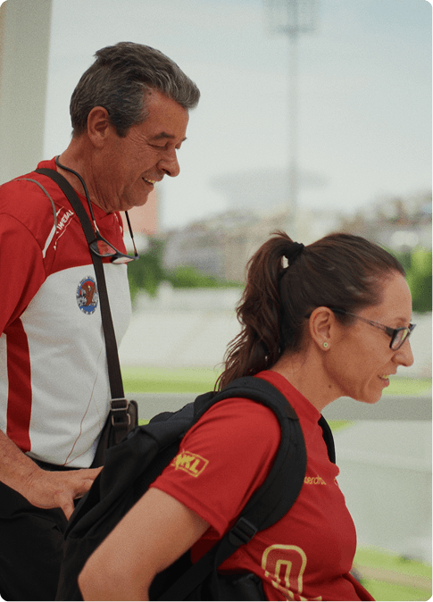
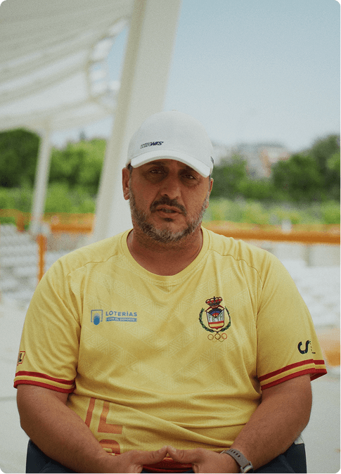

En colaboración con CaixaBank

Isabel Fernández:
“Cuando miro hacia Los Ángeles 2028, veo un sueño de vida”
▼ Ver reportaje completo
Durante toda su vida, Isabel Fernández ha convertido cada obstáculo en un nuevo objetivo. Fue campeona del mundo de para-kárate, entrenaba entre cuatro y seis horas cada día y compaginaba el alto rendimiento con un trabajo que le apasionaba. Hasta que la artrosis degenerativa que sufría empezó a poner límites a una vida que giraba alrededor del deporte. Los médicos fueron claros. Si continuaba compitiendo a ese nivel, su salud se iba a resentir. Isabel tuvo que frenarse.
“Se juntó que debía dejar de competir en alto rendimiento con tener que abandonar mi trabajo”, recuerda. De repente, dos de sus pilares desaparecían casi al mismo tiempo. Sin embargo, Isabel siempre reacciona. ¿Se cerraba una puerta? Pues era el momento para abrir otra. Muy pronto buscó cómo seguir haciendo deporte, cómo mantenerse activa y cómo volver a encontrar un lugar en el que sentirse de nuevo en la élite de la competición.

“Cuando miro a Los Ángeles 2028 me emociono porque veo posible un gran sueño de vida”, confiesa Isabel
Necesitaba mantenerse activa, salir de casa, relacionarse y, sobre todo, sentirse ella misma. Fue entonces cuando apareció el tiro con arco. La primera toma de contacto la tuvo en el Hospital Nacional de Parapléjicos de Toledo, dentro de un programa de promoción deportiva. Lo probó y le gustó. Poco después dio con el Club Águila Imperial. Eso sí, en un primer momento sus planes eran modestos.
Al principio, solo buscaba una actividad que le hiciera relacionarse. “Cuando empecé a practicar tiro con arco no quería competir”. Simplemente deseaba hacer deporte, salir de casa, socializar y eso fue, recuerda, “lo que le dije a Joaquín”, el presidente del club. Pero esas intenciones originales apenas duraron tres meses. Porque cuando apareció la posibilidad de participar en un torneo volvió a sentir algo que conocía demasiado bien: el reto, la adrenalina. “No me pude resistir”, reconoce. Su entrenador, Rubén Montes, sabe que esa pasión está en su genética. “Isabel tiene un ADN de alta competición”, nos cuenta. “Todos los deportes que ha hecho los ha llevado al máximo nivel”.
Creer en las personas para llegar más lejos
La historia de Isabel Fernández habla de adaptación, esfuerzo y capacidad para volver a empezar. El respaldo de CaixaBank contribuye a que deportistas como ella puedan seguir desarrollando su talento y mirando hacia nuevos objetivos.
El valor de sentirse acompañado
Detrás de cada deportista hay mucho más que horas de entrenamiento. Está la familia que acompaña, el equipo que sostiene y las personas que ayudan a convertir una meta lejana en un objetivo posible. Ese apoyo cotidiano se suma al de entidades que, como CaixaBank, apuestan por generar las condiciones necesarias para que los deportistas puedan concentrarse en seguir creciendo.
Una apuesta por el deporte paralímpico
El compromiso de CaixaBank con el deporte paralímpico parte de la idea de que el talento necesita oportunidades para desarrollarse. Su apoyo al Comité Paralímpico Español y al ecosistema que rodea a los deportistas contribuye a impulsar carreras deportivas y a dar visibilidad a historias que merecen ser conocidas.
Valores que van más allá de una competición
Constancia, disciplina, ilusión y capacidad de adaptación son algunos de los valores que definen el camino de Isabel. También son valores que CaixaBank busca promover a través de su apoyo al deporte paralímpico. Porque cada resultado esconde un proceso mucho más amplio en el que hay entrenamientos, renuncias, aprendizaje, acompañamiento y una voluntad constante de seguir avanzando.
La atleta sabe muy bien que la base del éxito en cada uno de los desafíos que afronta es el apoyo de su entorno. Su padre, Juan Antonio Fernández, resulta una pieza imprescindible para dar rienda suelta a su talento competitivo. “A mí me enorgullece ayudarla en todo lo que puedo”, asegura su progenitor, “estar con ella en las competiciones, en los entrenamientos”. En muchos casos, como él mismo dice, se convierte en los brazos y en los pies de su hija. En realidad, confiesa Isabel, “toda mi familia es una pieza indispensable”, explica Isabel. Pero el apoyo cotidiano que hace posibles los desplazamientos, que monta el arco o recoge las flechas, es su padre. “Sin su ayuda”, reconoce, “esto no sería posible”.
Y a este aliento familiar se suma el soporte de las instituciones que son conscientes de que el deporte es una magnífica fuente de oportunidades. Gracias al respaldo de patrocinadores como CaixaBank, por ejemplo, historias como la de Isabel pueden seguir avanzando y el talento de los deportistas se encuentra con las condiciones necesarias para desarrollarse. Porque disponer de recursos y estabilidad es la única forma de que el atleta pueda concentrarse en entrenar, competir y superarse.
“Me enorgullece ayudar a mi hija en todo lo que puedo, acompañándola a las competiciones, a los entrenamientos. Ser sus brazos y sus pies”, asegura Juan Antonio Fernández
Ahora, la mirada de Isabel está fija en Los Ángeles 2028. Después de reconstruir su carrera, los Juegos se han convertido en un objetivo. Y tras todo lo que ha pasado, simplemente hablar de la posibilidad de participar en ellos hace que se le salten las lágrimas. “Cuando miro hacia Los Ángeles, veo un sueño de vida, mucha ilusión, mucho trabajo”, nos dice. “Llevo luchando por ello muchos años y por fin parece que es un objetivo viable”, explica.
El camino aún es largo. Pero su entrenador sabe que Isabel tiene una gran capacidad para aprender, una enorme perseverancia y un talento que hay que moldear según su propia situación. “Trabajamos mucho con su carga interna, es decir, con cómo percibe ella que está ese día y cómo lo va asimilando”, nos dice. El entrenamiento se convierte en un ejercicio de precisión y paciencia. Cada flecha responde a una rutina muy trabajada, en el que el apoyo de instituciones como CaixaBank es el que hace viable el camino de una deportista que ha demostrado que, pase lo que pase, siempre hay una nueva meta.

“Trabajamos mucho con su carga interna, con cómo percibe ella que está ese día”, explica su entrenador
Su primer campeonato internacional de tiro con arco fue una Copa de Europa que se celebró en Roma. Isabel llegó sin expectativas y terminó disputando la final. “Realmente, lo único que recuerdo de aquella final fue celebrarlo con mis técnicos, con mis padres… en ese campeonato vinieron todos”, rememora. Su padre evoca aquel momento con la satisfacción de quien ha vivido de cerca el esfuerzo de llegar hasta allí: “Verla recoger ese trofeo en el primer campeonato internacional en que competía fue un orgullo muy grande”, afirma.
Desde entonces, su progresión ha continuado, los resultados han reconocido su talento y su tesón. Su familia y su entrenador han visto los días difíciles, las limitaciones, las adaptaciones y las horas de trabajo. También han sido testigos de cómo Isabel ha convertido cada obstáculo en una razón para continuar. Por eso, cuando llega una victoria, la celebración siempre la comparten todos juntos.



Ahora quedan nuevos retos. Seguir mejorando la técnica, cuidar el cuerpo, mantener la constancia y tratar de llegar a Los Ángeles en las mejores condiciones. Isabel ha aprendido a escuchar sus límites sin renunciar a sus ambiciones. Su rutina de competición le hace ir avanzando poco a poco, siendo muy consciente de la importancia de su entorno, demostrando su talento, pero también agradecimiento.
Porque su historia habla de superación, pero también de algo tan humano como la importancia de tener a alguien al lado cuando toca empezar de nuevo. Isabel encontró otra oportunidad en el tiro con arco. Su familia la ayudó a hacerla posible. Su entrenador convirtió el talento en éxito. Y el apoyo de instituciones como CaixaBank permiten que ese camino pueda continuar. Ahora apunta a Los Ángeles con la misma determinación con la que un día cogió un arco después de haber tenido que dejar el kárate. Porque algunas veces la vida obliga a cambiar de dirección, pero lo más importante es encontrar siempre motivos para seguir avanzando.